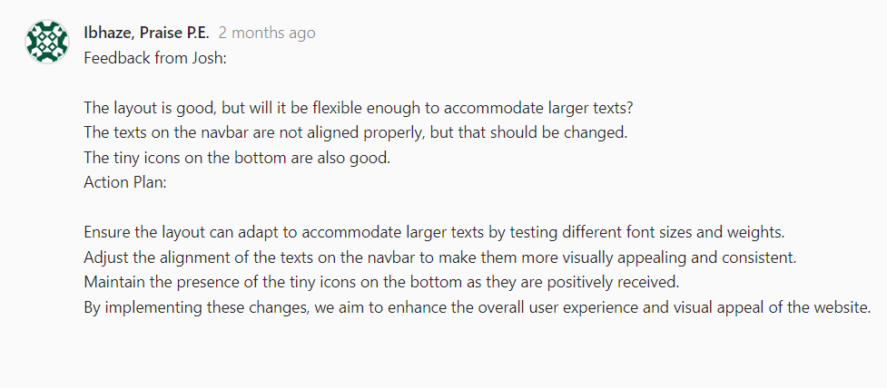
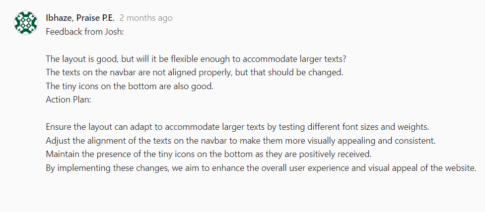

Personal Projects


LOGO DEVELOPMENT
Goal
I wanted to challenge myself, so I started working on a different logo than the one I did last semester because I felt that logo wasn't good enough. After several iterations ranging from using just the letters of my first and last name to trying to update my former logo, I felt like I couldn't find the right logo by just using letters. So, I decided to go a little deeper.
Process
After searching for different fonts, an idea came to me: to create a logo that not only includes the first letter of my personal brand (Pairbiz Designs) but also incorporates a smiley face. I brainstormed on the best font to use and ended up with Bauhaus 93, and the idea came to life. The first version of my logo.
After the first iteration, I thought it was good enough but as I learnt earlier in the semester in one of Penny's lecture "The product must be centered around the user," and in this case, I wanted my logo and brand to be seen by other students, so I asked for feedback from my peers (some semester 2 students). Many of them liked the idea, but I also received constructive feedback. They suggested that I should maybe make it look more like an emoji by adding the face, or at least outlines of the face. I felt that the feedback was accurate because my goal was to make the logo have facial features so I started working on various versions of my second iteration. I incorporated the dots to draw a mental image for people who see it, making it look more like a face. After that, I asked for their feedback again and they liked the design and the thought behind it. I still wasn't satisfied with just a black and white logo, so I started looking at different textures. I found a grey background and masked the image with my logo, and that's how my final iteration was created. See my approach and iterations for my logo here.
Reflection
In designing my logo, I conceptualized and developed the card on Figma, and by doing so, I displayed my proficiency in LO1. I had multiple iterations and feedback from my peers on each iteration and that showed my proficiency in LO3. I feel I also displayed learning outcome 5 by taking initiative by seeing the weakness in my previous logo and creating a logo that would represent my personal brand. (The final logo is displayed on the bottom left, with my first iteration on top of it).Beyond visual aesthetics, this process honed my understanding of branding and identity, shaping not just a logo but a deeper sense of creativity
Learning outcomes displayed:
Learning outcome 1
Learning outcome 3
Learning outcome 4
Learning outcome 5
 

PROTOTYPE
Goal
I started out my portfolio by creating a mid-fidelity prototype using Figma. I wanted to have a change from last semester's prototype's color scheme, so I chose black because I wanted my portfolio to be more professional, and I wanted to have a more professional look while maintaining a cool aesthetic.
Process
I researched different layouts on Awwwards, and I loved a particular layout. After applying that layout, I asked for feedback from Josh and he said that I should think about how the layout will look when I have more content. After that, I tweaked it a bit and used it only on my 'About' page because I thought that the layout wouldn't actually do the job I wanted it to do on a bigger scale. I decided to use a more common and flexible layout for other pages. You can explore the full prototype here.
Reflection
I actively engaged with multiple learning outcomes while creating this prototype. I conceptualized and created diverse page layouts and designs aligning with the requirements for LO1, drawing inspiration from award-winning websites and iteratively refining designs based on feedback, ensuring LO3 was met. Through meticulous adjustments, such as testing font sizes and improving text alignment, I adhered to professional standards, ensuring flexibility and visual consistency (LO4). Additionally, the decision to maintain small icons based on positive feedback reflects personal leadership, aligning design choices with core values for growth and development (LO5).
Learning outcomes displayed:
Learning outcome 1
Learning outcome 3
Learning outcome 4
Learning outcome 5
FIGMA TUTORIALS
Goal
Since the beginning of the semester, I've been actively exploring various tutorials to enhance my proficiency in using Figma. I believe I've made significant progress through these resources, learning more than I would have otherwise. My goal was to understand figma and its tools on a larger scale and so i took tutorials that helped me do just that
Process
I went on YouTube to look for a tutorial that could help improve my design skills, and I found this. Although I'm not a total beginner in Figma, this tutorial helped me a lot. It improved my understanding of how layouts work and encouraged me to incorporate gridlines more often to enhance the layout of my pages. It also made me realize how important having a low-fidelity prototype is. Every time I work on a prototype in Figma, it helps me see that without visualizing the prototype, I'm just going to be stuck trying to make decisions on my designs. Additionally, it introduced me to a website called relume that helps me plan out how website navigation will work much faster.
Reflection
I felt I was able to meet learning outcome 5 because I recognized I lacked knowledge in designing prototypes and acknowledged that weakness, deciding the best course of action would be taking a course and that course in turn gave me more knowledge. I applied what I learned in the tutorial in the mid-fidelity prototype for our group prototype here.
Learning outcomes displayed:
Learning outcome 5
UX TUTORIALS
Goal
I really wanted to learn more about UX design because it was pretty obvious that I lacked skill in that area , so I decided to take a short course at Accenture. It turned out to be a great choice because it taught me some really important things.
Process
The course showed me that when it comes to designing things for people to use, you've got to think about those people first. It's not just about making things look nice; it's about making sure they work well for the people using them. I learned that I shouldn't just trust my own opinions when making design choices. Instead, I need to involve the people who will actually be using what I'm designing.
Reflection
By taking this course, I showed that I'm serious about getting better at what I do and that I know how to follow the rules of my profession, displaying my proficiency in Learning Outcome 5. Learning all this is helping me become a better designer overall. It's making me more ready for whatever comes my way in my future as a UX designer.
Learning outcomes displayed:
Learning outcome 5
BLENDER
Goal
After Josh introduced me to Blender, I felt like I needed to catch up on some things because the lessons were a bit too fast . So, I decided to watch a tutorial course about Blender on YouTube.
Process
The tutorial really helped me learn a lot about Blender, including how to navigate the interface, create basic shapes, and apply textures to models. I even managed to complete a few models I previously struggled with following the tutorial's guidance.
Reflection
This aligns with learning outcome 5 because I made a decision to improve my knowledge of something important for the future. Additionally, by working on exercises from class, I gained a better understanding of the blender environment and how to apply what I learned practically including the textures and uv mapping .
Learning outcomes displayed:
Learning outcome 5
INTERVIEW
Goal
After being introduced to the audio lab and the world of audio recording, I felt compelled to dive deeper into the subject. This led me to interview Danya, aiming to familiarize myself further with the audio lab and its functionalities. My initiative to conduct this interview aligns with learning outcome 5, showcasing my proactive approach to enhancing my skills and knowledge.
Process
Throughout the process, we encountered various challenges, including technical errors from the other side of the studio. Despite these setbacks, we persevered and successfully completed the interview. This experience not only tested our problem-solving abilities but also demonstrated our resilience and determination to overcome obstacles.
In addition to navigating technical difficulties, we also engaged in several iterations, refining our questions and answers along the way. This iterative process highlights my proficiency in learning outcome 3, as I continuously improved upon the initial concept through experimentation and feedback.
Reflection
Overall, this interview served as a valuable learning experience, allowing me to apply theoretical knowledge in a practical setting. By taking the initiative to facilitate personal development and embracing challenges head-on, I have demonstrated competency in both learning outcome 3 and learning outcome 5. You can listen to the interview here
Learning outcomes displayed:
Learning outcome 3
Learning outcome 5
EXTRA WORKSHOPS
Goal
This semester I wanted to take more workshops outside of my schedule so that i'd get more knowledge on things I didn't understand. So I attended a couple of workshops including one on social media and branding where I learnt a key lesson: it's crucial to keep your brand message consistent across all social media platforms.
Process
The workshop taught me about creating interesting stories, keeping a consistent visual style, and connecting with my audience in an authentic way. We did practical exercises and had discussions that helped me understand how every post, caption, and interaction affects how people see a brand.
The workshop also stressed the importance of knowing our audience—what they like, how they act, and what they want. It showed me the importance of making content that my followers relate to, that makes them feel something, and that helps me connect with them. By using analytics, I can improve my strategies, make my content better, and get real results.
I also attended a Three.js workshop by Maikel for semester 3's purple class, where I learned about setting up my first scene, adding a camera, and incorporating objects. I also learned about animating objects, lighting, and interactivity within the scene. Combined with Blender, I feel that I can really develop the 3D aspect of my design skills even more.
Reflection
Overall, the workshop made me realize how important branding is in today's digital world. It gave me skills and knowledge that I'm excited to use in my future projects. In my current project, I applied some of the principles that the teacher gave, including always getting user feedback at every stage of the project. By taking on an extra workshop that teaches me more things about the career I have chosen (UX design), I feel that I've displayed my proficiency in learning outcome 5.
After getting into Three.js, I really wanted to implement some designs into my portfolio, but I didn't have enough knowledge about it and I didn't have enough time. So, I used CSS to implement my idea on my homepage by creating a 3D-like model of my name and added a little animation using transform and other CSS elements.
Learning outcomes displayed:
Learning outcome 5
EXTRA TUTORIALS
Goal
My ability to utilize AI to create and generate things that I wanted accurately was lacking. I felt it was necessary to improve this skill because I had many problems that could have been solved easily with AI. However, I spent way too much time on them (e.g., the Node.js tutorial). Therefore, I wanted more knowledge in this aspect & I wanted to delve deeper into generative AI after the project with Livewall.. The best course of action was to learn through tutorials.
Process
I went on YouTube and found a very informative tutorial. I learned to always provide context as well as examples and to use words like "generate" and "analyze" while using prompts on resources like ChatGPT. I also took a short Google course. It taught me how to recognize when an output is generated by AI and about AI models and LLM's.
Reflection
This helped me a lot because, using the guidelines provided by the tutorial, anytime I prompt ChatGPT, it always provides concise answers without straying from the initial point. I feel that I met Learning Outcome 5 due to my willingness to actively improve and expand my skill set using available resources. The google course taught me that it's generative AI when the output is in natural language like text, image, or audio, but not when the output is a probability or a class. Additionally, I learned about various techniques and models used in generative AI, such as GPT, GANs, and VAEs. This knowledge has inspired me to explore more advanced topics and consider how to apply generative AI in future projects.
Learning outcomes displayed:
Learning outcome 5
PHOTOSHOP TUTORIALS
Goal
I was already introduced to photoshop in semester 2 but I didn't have a lot of knowledge about it and I felt that it was necessary to have more knowledge about it especially because of the field I want to go into later (Ux design).
Process
I started out by searching for which tutorial will be best for a beginner on google and reddit and I found a youtube channel (Piximperfect) and it had an introduction to photoshop for beginners and I found out it was really great for me as it really was in-depth and It improved my skills in the software . I even woorked on a couple of projects (including the image on the right) in this project , I was tasked replacing the backround of the subject and replacing it with another background and in the process I learnt to work with layers while not working destructively ...I also became familiar with the smudge tool and I used it to correct some lighting errors from the new background on the subject .
Reflection
I feel I have been able to meet the requirements for learning outcome 1 & 5 because I developed a couple of media products through the project and I also actively took steps to ensure my goal of becoming a Ux designer is met.

PORTFOLIO FEEDBACK
In the first iteration of my portfolio the feedback I got from Joris and Amer was that I didn't show the connection to the learning outcomes in my portfolio and after that feedback , I decided to add a connection between things in my portfolio and every learning outcome that they meet .I also decided to go a bit further visually and add icons and their meaning in each page according to Amer's advice to do that . In the second feedback session , I got feedback that the loading time for my index page was way too long and the links had bad colours so I removed the transition to the next page and create a button to replace that and I also changed the colour of the links from the default colour to a more user friendly colour , I also got feedback from josh that I need to create a portfolio abstract that will give an overview of what will be shown in the portfolio so I did that and he also said I should think iabout creating an explanation to the icons that they were too vague and he had no idea what they meant , so I placed a key(explanation) of what learning outcome each icon represented on every page. I didnt agree with a part of Josh's feedback about having a page for each learning outcome because I felt that I had way too many learning outcomes on each project to do that so I just kept my page structure. After some weeks, I asked for feedback from Amer on the structure of my portfolio and how the connection that I made to the learning outcomes was, and he liked the way I was able to connect the learning outcomes and tell a story.I also went to another semester 3 teacher to ask for feedback on my portfolio's structure after asking Amer and the teacher suggested that I add subsections to my portfolio so that I'll have better readability and so I took his advice and I split each section into 3 subsections(Goal, process, reflection) and I noticed that my portfolio became more readable . After this , I went back to ask for feedback from Amer and he said it would be nice if my scrollbar was visible and if I had the learning outcome under each icon so I did that and customized the scrollbar a bit . My willingness to ask for feedback and make improvements after that shows my proficiency in learning outcome 3.
Learning outcomes displayed:
Learning outcome 3
PERSONAL LEADERSHIP
Throughout the semester, I've learned a lot and grown a ton, especially in design. At first, design was really tough for me, but I worked hard and got a lot better. I watched a bunch of tutorials on Blender for 3D design and did design challenges on Daily UI. These things helped me get better at the technical stuff and feel more sure of myself. One big help was Penny's lectures. She taught me a lot about design principles and how to use them in real life. Before her lectures, I didn't know much about some parts of user-centered design, but she really helped me out. Her lectures made me want to learn even more about design..A vital lesson was the one about persuasive design , she taught me about the dark side of user-centered design and how big companies use certain dark techniques to keep their users attached to their products . At the same time, I've been working on my weak points and trying to be a better leader in my personal life. All this work has changed how I see design. It used to be hard for me, but now I feel like it's something I'm good at. This journey has taught me a lot about myself and how to keep getting better. I've realized that it's not just about getting better at using computers, but also about growing as a person. I also started to look at some job vacancies in Ux design on different platforms like linkedin and their requirements and I found out that all of them required proficiency in figma or adobe xd & I decided to improve my knowledge in Figma through tutorials because of this . I listened in on one workshop at the IT festival, and during the audio workshop, I realized that I wanted nothing to do with that field. Maybe it was just because I knew nothing about it because everything sounded complex. Because of all this progress, I've decided to focus on smart mobile design next semester. I feel more confident in my skills now, and I'm excited to keep learning and improving. By knowing what I'm good at and what I need to work on, I'm taking control of my own growth and trying to be the best I can be.
KEY
-
Learning Outcome 1 (LO1): Conceptualization
-
Learning outcome 2 (LO2): Documentation
-
Learning Outcome 3 (LO3): Creative Iteration
-
Learning Outcome 4 (LO4): Professional Standards
-
Learning Outcome 5 (LO5): Personal Leadership